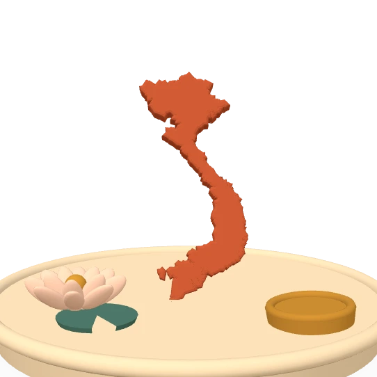

Đỗ Thùy HươngDo Thuy HuongDo Thuy Huong
Hướng dẫn khoa học: PGS.TS. Phan Anh Tú Supervisor: Assoc. Prof. Dr. Phan Anh Tu Direction : Pr. Phan Anh Tú
Tôi nghiên cứu quan hệ giữa quốc tế hóa và hiệu quả hoạt động của doanh nghiệp ở châu Á, bằng dữ liệu doanh nghiệp WBES trên 50 nền kinh tế và phân tích tổng hợp. I study how internationalization shapes firm performance in Asia, using WBES firm-level data across 50 economies and meta-analysis. J'étudie la relation entre internationalisation et performance des entreprises en Asie, à partir des données d'entreprises WBES (50 économies) et de la méta-analyse.
- WBES
- Phân tích tổng hợpMeta-analysisMéta-analyse
- Thể chếInstitutionsInstitutions

Quốc tế hóa và hiệu quả doanh nghiệp ở châu ÁInternationalization and firm performance in AsiaInternationalisation et performance des entreprises en Asie
Luận án tiến sĩ của tôi hỏi: quốc tế hóa có cải thiện hiệu quả hoạt động của doanh nghiệp ở châu Á hay không, và trong điều kiện thể chế nào thì quan hệ đó mạnh lên hay yếu đi. Tôi trả lời câu hỏi này bằng hai nguồn bằng chứng: dữ liệu khảo sát doanh nghiệp của Ngân hàng Thế giới (WBES) và tổng hợp định lượng các nghiên cứu đã công bố. My dissertation asks whether internationalization improves firm performance in Asia, and under which institutional conditions that relationship strengthens or breaks down. I answer it with two bodies of evidence: World Bank Enterprise Survey (WBES) firm-level data, and a quantitative synthesis of the published literature. Ma thèse pose une question : l'internationalisation améliore-t-elle la performance des entreprises en Asie, et sous quelles conditions institutionnelles ? J'y réponds par deux corpus de preuves : les données d'entreprises de la Banque mondiale (WBES) et une synthèse quantitative de la littérature.
Tiền đăng ký trên OSFPreregistrations on OSFPréenregistrements sur OSF
Sơ đồ: quốc tế hóa tác động lên hiệu quả hoạt động của doanh nghiệp, quan hệ này được bối cảnh thể chế điều tiết.Diagram: internationalization acts on firm performance, and institutional context moderates that relationship.Schéma : l’internationalisation agit sur la performance de l’entreprise, relation modérée par le contexte institutionnel.
Dữ liệuDataDonnées
WBES cấp doanh nghiệp, 50 nền kinh tế; 236 nghiên cứu được mã hóa cho phân tích tổng hợp.Firm-level WBES across 50 economies; 236 studies coded for the meta-analysis.WBES au niveau des entreprises, 50 économies ; 236 études codées pour la méta-analyse.
Phương phápMethodsMéthodes
Kinh tế lượng doanh nghiệp, kiểm định điều tiết, phân tích tổng hợp hiệu ứng ngẫu nhiên.Firm-level econometrics, moderation tests, random-effects meta-analysis.Économétrie d'entreprise, tests de modération, méta-analyse à effets aléatoires.
Công cụToolingOutils
M-AIDA: trích xuất mức độ ảnh hưởng bằng LLM, kiểm chứng con người 100%, khóa bất biến.M-AIDA: LLM-assisted effect-size extraction with 100% human verification and immutable locking.M-AIDA : extraction des tailles d'effet assistée par LLM, vérifiée à 100 % par l'humain.
Công bố chọn lọcSelected publicationsPublications choisies
Danh mục đầy đủ, lọc theo loại và năm, nằm ở trang công bố; bản chính thức trên ORCID.The complete list, filterable by type and year, lives on the publications page; the authoritative record is on ORCID.La liste complète se trouve sur la page publications ; l'enregistrement de référence est sur ORCID.
Bài tạp chíJournal articlesArticles de revue
Bản thảo & đang phản biệnWorking papers & under reviewDocuments de travail
Chương sách & hội nghịBook chapters & conference papersChapitres & conférences
Học phần giảng dạyCourses taughtCours enseignés
Trường Kinh tế, Đại học Cần Thơ. Học phần nào có học liệu mở thì được liên kết kèm theo.School of Economics, Can Tho University. Where open course material exists, it is linked with the course.École d'économie, Université de Cần Thơ. Le matériel ouvert, s'il existe, est lié au cours.
- Kinh tế lượngEconometricsÉconométrie—
- Phương pháp nghiên cứu trong kinh tếResearch Methods in EconomicsMéthodes de rechercheM-AIDA ↗
- Phân tích hoạt động kinh doanhBusiness Performance AnalysisAnalyse de la performance—
- Kinh doanh quốc tếInternational BusinessCommerce international—
- Thương mại điện tửE-commerceCommerce électronique—
- Mô phỏng tình huống trong kinh doanh (EC1314)Business Simulation (EC1314)Simulation d'entreprise (EC1314)BizOn ↗
- Khởi nghiệp & khởi sự doanh nghiệpEntrepreneurship & New Venture CreationEntrepreneuriatEnQuiz ↗
- Kỹ năng giao tiếp & soạn thảo văn bản (EC1103)Communication & Document Drafting Skills (EC1103)Communication & rédaction (EC1103)ComDraft ↗
Phản biện tạp chí: International Journal of Economics, Management and Accounting (IJEMA). Peer review: International Journal of Economics, Management and Accounting (IJEMA). Évaluation par les pairs : International Journal of Economics, Management and Accounting (IJEMA).
Phần mềm cho nghiên cứu và giảng dạySoftware for research and teachingLogiciels pour la recherche et l'enseignement
M-AIDA
Trích xuất mức độ ảnh hưởng từ PDF bằng mô hình ngôn ngữ lớn, kiểm chứng con người 100%, khóa bất biến. Mã nguồn mở, lưu trữ Zenodo.Effect-size extraction from PDFs with large language models, 100% human verification and immutable locking. Open-source, archived on Zenodo.Extraction des tailles d'effet depuis des PDF, vérifiée à 100 % par l'humain. Libre, archivé sur Zenodo.
Mở M-AIDA ↗Open M-AIDA ↗Ouvrir M-AIDA ↗BizOn AI
Trò chơi mô phỏng kinh doanh cho đại học: năm đội trên một thị trường đa tác tử, lõi tài chính tất định. Dùng trong học phần EC1314.A business-simulation game for higher education: five teams on one multi-agent market with a deterministic finance core. Used in EC1314.Jeu de simulation d'entreprise : cinq équipes, marché multi-agents, cœur financier déterministe.
Mở BizOn ↗Open BizOn ↗Ouvrir BizOn ↗EnQuiz
Ứng dụng ôn tập học phần Khởi nghiệp: 300 câu theo 5 chương, thi thử có đếm giờ, lưu câu sai; song ngữ, cài được, chạy offline.A revision app for the Entrepreneurship course: 300 questions across 5 chapters, timed mock exams, missed-question tracking; bilingual, installable, offline.Application de révision : 300 questions, examens chronométrés, bilingue, hors ligne.
Mở EnQuiz ↗Open EnQuiz ↗Ouvrir EnQuiz ↗ComDraft
Bộ học liệu học phần EC1103: 5 bộ slide có ghi chú, 3 bài thực hành phòng máy, ngân hàng 200 câu và 8 video phụ đề tiếng Việt.A complete teaching package for EC1103: five lecture decks with notes, three lab workbooks, a 200-question bank and eight subtitled videos.Ensemble pédagogique pour EC1103 : cinq diaporamas, trois TP, 200 questions, huit vidéos sous-titrées.
Mở ComDraft ↗Open ComDraft ↗Ouvrir ComDraft ↗We Create Tomorrow
Trang karaoke ca khúc của Trường Kinh tế, Đại học Cần Thơ: lời song ngữ Việt - Anh chạy theo từng đoạn, có giao diện sáng và tối, cài được như ứng dụng. «Từ sông Mekong ra thế giới».A karaoke page for the song of the School of Economics, Can Tho University: bilingual Vietnamese-English lyrics section by section, light and dark themes, installable as an app. “From the Mekong to the World”.Page karaoké de la chanson de l'École d'économie, Université de Cần Thơ : paroles bilingues vietnamien-anglais par section, thèmes clair et sombre, installable comme une application. « Du Mékong au monde ».
Mở We Create Tomorrow ↗Open We Create Tomorrow ↗Ouvrir We Create Tomorrow ↗Âm nhạc, songbook, trò chơi lịch sử, nhân vật ảo và trang viên 3D sống ở một cửa riêng.Music, the songbook, history games, the virtual character and the 3D estate live behind their own door.La musique, le songbook, les jeux, le personnage et le domaine 3D vivent derrière leur propre porte.
🪷 Mở vườn số →Open the digital garden →Ouvrir le jardin numérique →“Non sông Việt Nam có trở nên tươi đẹp hay không, dân tộc Việt Nam có bước tới đài vinh quang để sánh vai với các cường quốc năm châu hay không, chính là nhờ một phần lớn ở công học tập của các em.” “Whether the land of Vietnam becomes beautiful, whether the Vietnamese people can step onto the podium of glory to stand shoulder to shoulder with the great powers of the five continents, depends in large part on your studies.” “Que le Vietnam devienne prospère et que son peuple se hisse au rang des grandes nations dépend en grande partie de vos études.”Chủ tịch Hồ Chí Minh, Thư gửi học sinh nhân ngày khai trường đầu tiên, 9/1945President Ho Chi Minh, letter to students on the first school-opening day, September 1945Président Hô Chi Minh, lettre aux élèves, septembre 1945